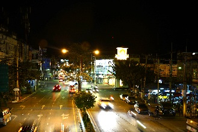
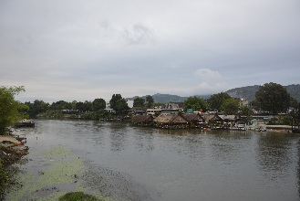
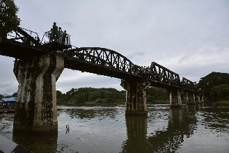
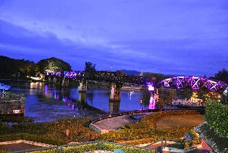
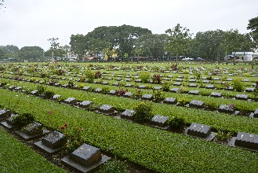
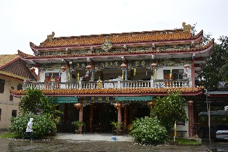
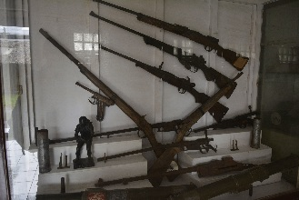

Kanchanaburi (ชลบุรี)
 Capital da província de mesmo nome, localizada na confluência dos rios Kwai Noi e Kwai Yai, há 123km à oeste de Bangcoc.No final do Seculo XVIII a cidade foi estabelecida pelo rei Rama I como um posto de defesa contra possíveis ataques birmaneses no que hoje em dia é o subdistrito de Lat Ya.
Em 1833 a cidade moveu-se 16km à sudeste ao longo do rio para sua localização atual, durante o reinado de Rama III.
Para a maioria dos visitantes, o principal ponto de interesse é a ponte sobre o Rio Kwai e a Death Railway, assim como os museus associados à estas atrações.
Como chegar à Kanchanaburi
De ônibus: ônibus públicos da BKS (linha 81) saem da estação Sul de Bangcoc (Sai Tai Taling Chan, ou สายใต้ตลิ่งชัน), localizada ao extremo oeste de Thonburi. Em Kanchanaburi há 2 rodoviárias diferentes, mas próximas uma da outra. Os ônibus de 1ª classe saem da rua Saengchuto e os de 2ª classe do terminal maior, uma quadra à leste. Os ônibus de 1ª classe saem de Bangcoc à cada 15 minutos, das 5:00 às 22:30, levam 2 horas e custam ฿$ 110. Ônibus de 2ª classe (rota nova) saem de Bangcoc à cada 20 minutos, das 3:30 às 19:00, levam 2 horas e custam ฿$ 95. Os de 2ª classe da rota antiga saem de Bangcoc à cada 15-30 minutos, das 4:00 às 18:00, e levam 3 horas. Há também ônibus saindo com menor frequência da estação norte (Mo Chit Bus Terminal). Atenção pois há uma estação Mo Chit do BTS, que fica longe do terminal, portanto, não confunda as 2. Ônibus de 1ª classe com bwc saem às 6:00, 11:00 e às 14:30, levam 3 horas e custam ฿$ 122. Ônibus de 2ª classe sem bwc saem às 5:00, 7:00, 9:30, 12:30 e às 17:00. A Rodoviária fica na rua Ban Tai, próxima à esquina da avenidas U Thong com Sangchuto. De trem: trens saem da estação Thonburi em Bangcoc às 7:50 e chegam na estação de Kanchanaburi às 10:25, e também às 13:55, chegando às 16:24. É interessante comprar um ticket até a River Kwai Bridge, já que esses 2 trens são os únicos que cruzam a ponte. Desde Dezembro de 2005, a taxa é de ฿$ 100 para estrangeiros. Tenha em mente de que chegar à estação de Thonburi desde a Khao San Road é mais difícil do que parece. Motoristas de tuk-tuk vão te cobrar um preço absurdo, e caminhar envolve cruzar 2 pontes e voltar por outro caminho. A melhor maneira é provavelmente pegar o barco de passageiros no Píer Phra Arthit e depois o ferry que chega ao Píer da Thonburi Railway Station e caminhar um pouco ou pegar o microônibus aberto até lá. A outra forma de chegar até a estação Thonburi (Bangkok Noi) é caminhar um pouco ao sul da Thammasat University (próxima ao Sanam Luang), pegar o ferry (฿$ 3) desde o Wat Mahathat até Wanglong, do outro lado do rio. Caminhe no sentido oeste até chegar em uma rodovia principal no sentido norte-sul. Aqui siga ao norte até chegar em uma grande ponte, passe por baixo dela e depois siga à oeste até a estação. Desde a Khao San Road essa caminhada deve levar uns 40 minutos (incluindo o ferry). Você pode também se afastar um pouco da Khao San Road (para evitar os taxistas exploradores) e pegar um táxi com taxímetro até a estação, o que deve custar uns ฿$ 120. Se você perder o trem, um táxi da estação de Thonburi até o Sai Tai Mai Bus Terminal (de onde saem os ônibus para Kanchanaburi) custa em torno de ฿$ 130. Os trens continuam até Nam Tok, o atual ponto final da Death Railway. Estrangeiros pagam ฿$ 100 em cada direção de Kanchanaburi para Wang Pho, a última estação antes de Nam Tok. O ônibus das 10:30 tem uma seção turística especial, onde por ฿$ 300 você fica no ar condicionado, com refrigerante e um certificado de ter passado pela Death Railway.De minivans: saem da Victory Monument Station do Skytrain a cada 15 minutos, ou antes se completarem a lotação. Custam ฿$ 130 de Bangcoc para Kanchanaburi e ฿$ 120 de Kanchanaburi para Bangcoc.
Se locomovendo pela cidade
Se orientar na cidade é muito fácil. A rua principal, a Saeng Chuto, segue toda a extenção da cidade de norte à sul, ligando a ponte sobre o rio Kwai, a estação de trem e a estação de ônibus. Paralela a ela, mais próxima do rio, fica a rua Mae Nam Kwae, aonde a maioria das guesthouses e bares podem ser encontrados. A Tourist Authority of Thailand, na rua Saeng Chuto (logo ao sul do terminal de ônibus), distribui um mapa gratuíto da cidade e da província. O horário de funcionamento é das 8:00 às 16:00.Songthaews pequenos e laranja ou grandes e amarelo cruzam a rua Saeng Chuto, ligando a estação de ônibus, de trem e a ponte. Custam ฿$ 10.
Tuk-tuks e mototáxis estão disponíveis a preços negociáveis, e algumas guesthouses oferecem aluguel de bicicleta. Alguns lugares na cidade (a maioria ao longo da rua Maenam Kwai) alugam bicicletas por ฿$ 50 por dia, ou motos por ฿$ 200. Você pode alugar biciletas na Yanee, na rua Maenumkaew, 197.
As atrações de Kanchanaburi
Rio Kwai
Rio que se tornou mundialmente famoso graças ao filme e ao livro "A Ponte no Rio Kwai".
Nas margens do rio você encontra vários restaurantes, alguns deles fixos, outros flutuantes.
Você pode agendar uma tour de 1 dia até o rio em uma das várias agências de turismo da Khao San Road, em Bangcoc. Algumas delas incluem também o Cemitério de Guerra Don Rak, o Museu JEATH, rafting de bambu, passeio de elefante, passeio de trem e lanche. As tours custam em torno de ฿$ 1000 com todos os ingressos e translados inclusos.
Nas margens do rio você encontra vários restaurantes, alguns deles fixos, outros flutuantes.
Você pode agendar uma tour de 1 dia até o rio em uma das várias agências de turismo da Khao San Road, em Bangcoc. Algumas delas incluem também o Cemitério de Guerra Don Rak, o Museu JEATH, rafting de bambu, passeio de elefante, passeio de trem e lanche. As tours custam em torno de ฿$ 1000 com todos os ingressos e translados inclusos.

Ponte do Rio Kwai
A famosa ponte há 3km ao norte do centro da cidade, retratada no livro e filme "A Ponte do Rio Kwai" de 1957, é apenas uma parte da Ferrovia da
Morte que levava até a Birmânia (atual Mianmar).
Foi construída sob ordens dos japoneses e custou a vida de 16.000 prisioneiros de guerra aliados da 2ª Guerra Mundial, além de outros 90.000 "empregados" asiáticos (a grande maioria em regime de escravidão).
Foi bombardeada em 1945 e reconstruída após o fim da guerra, mas em um estilo diferente do original.
Partes da ponte original se encontram no Museu de Guerra Don Rak.
A ponte fica aberta aos turistas e pode ser cruzada a pé, mas aconselha-se cautela, pois no caminho de madeira entre os trilhos há alguns buracos grandes o suficiente para que você caia no rio!
Como a ponte ainda é usada pela linha do trem, é possível pegar um dos 2 trens diários que cruzam a ponte. O percurso entre a estação Nam Tok e estação próxima à ponte leva pouco mais de 2 horas.
Foi construída sob ordens dos japoneses e custou a vida de 16.000 prisioneiros de guerra aliados da 2ª Guerra Mundial, além de outros 90.000 "empregados" asiáticos (a grande maioria em regime de escravidão).
Foi bombardeada em 1945 e reconstruída após o fim da guerra, mas em um estilo diferente do original.
Partes da ponte original se encontram no Museu de Guerra Don Rak.
A ponte fica aberta aos turistas e pode ser cruzada a pé, mas aconselha-se cautela, pois no caminho de madeira entre os trilhos há alguns buracos grandes o suficiente para que você caia no rio!
Como a ponte ainda é usada pela linha do trem, é possível pegar um dos 2 trens diários que cruzam a ponte. O percurso entre a estação Nam Tok e estação próxima à ponte leva pouco mais de 2 horas.

Ferrovia da Morte
Ferrovia construída por prisioneiros de guerra durante a 2ª Guerra Mundial.
Seu trajeto vai de Nong Pladuck, na Tailândia, até Thanbuyuzayat, em Mianmar.
A parte mais espetacular do percurso é a Kra Sae Viadukt Section, pois o trem passa ao lado do morro, sobre o rio. Para tirar boas fotos, aconselha-se assegurar um assento ao lado de alguma janela do lado direito.
Se você entrou no trem na Nam Tok Station, vá para o lado oposto ao que entrou.
Seu trajeto vai de Nong Pladuck, na Tailândia, até Thanbuyuzayat, em Mianmar.
A parte mais espetacular do percurso é a Kra Sae Viadukt Section, pois o trem passa ao lado do morro, sobre o rio. Para tirar boas fotos, aconselha-se assegurar um assento ao lado de alguma janela do lado direito.
Se você entrou no trem na Nam Tok Station, vá para o lado oposto ao que entrou.

Cemitério de Guerra Don Rak
Cemitério que abriga restos mortais de 6982 soldados mortos durante a construção da Ferrovia da Morte (australianos, holandeses e
britânicos).
Com o fim da guerra, os aliados decidiram mover todos os corpos de prisioneiros enterrados ao longo da linha férrea para 2 cemitérios de guerra na cidade, pois seria mais fácil manter os túmulos em boas condições. Os túmulos estão alinhados em linhas com gramados cortados primorosamente. Alguns deles possuem emocionantes mensagens pessoais.
É um local triste de se visitar, mas importante por seu contexto histórico.
Ateção: durante a temporada de chuvas o acesso aos túmulos pode ser fechado para evitar danos ao gramado. O acesso só é liberado à parentes de enterrados no local.
Com o fim da guerra, os aliados decidiram mover todos os corpos de prisioneiros enterrados ao longo da linha férrea para 2 cemitérios de guerra na cidade, pois seria mais fácil manter os túmulos em boas condições. Os túmulos estão alinhados em linhas com gramados cortados primorosamente. Alguns deles possuem emocionantes mensagens pessoais.
É um local triste de se visitar, mas importante por seu contexto histórico.
Ateção: durante a temporada de chuvas o acesso aos túmulos pode ser fechado para evitar danos ao gramado. O acesso só é liberado à parentes de enterrados no local.

Centro da Ferrovia Tailândia-Birmânia
Museu interativo e centro de pesquisa e informação dedicado à história da ferrovia Tailândia-Mianmar.
O centro é considerado a melhor fonte de informação sobre a 2ª Guerra Mundial na Tailândia e sobre as condições enfrentadas pelos prisioneiros.
Reserve no mínimo 1h para as exibições.
O centro é considerado a melhor fonte de informação sobre a 2ª Guerra Mundial na Tailândia e sobre as condições enfrentadas pelos prisioneiros.
Reserve no mínimo 1h para as exibições.
Local: rua Jaokunnen, 73, Ban Nua, próximo ao Cemitério de Guerra Don Rak.
Horário: das 9:00 às 17:00.
Entrada: ฿$ 120 (adultos) ou ฿$ 60 (crianças).
Site: www.tbrconline.com.
☎: +66 3 451-2721 / 03 451-2721.
Voltar à lista
Horário: das 9:00 às 17:00.
Entrada: ฿$ 120 (adultos) ou ฿$ 60 (crianças).
Site: www.tbrconline.com.
☎: +66 3 451-2721 / 03 451-2721.
Wat Thawonwararam
Templo que mostra a influência chinesa na cidade.
Dentro do templo está o Phra Buddha Sathapornmongkol ou Luang Phor To, uma imagem do final do período U-thong, mas o grande destaque é sem dúvida a arquitetura chinesa e o belíssimo pagode no terreno do templo.
Fica bem ao lado do Rio Kwai.
Atenção aos cães do templo!
Dentro do templo está o Phra Buddha Sathapornmongkol ou Luang Phor To, uma imagem do final do período U-thong, mas o grande destaque é sem dúvida a arquitetura chinesa e o belíssimo pagode no terreno do templo.
Fica bem ao lado do Rio Kwai.
Atenção aos cães do templo!

Museu de Guerra JEATH
Fica bem próximo à ponte do Rio Kwai, às margens do rio, dentro do Wat Chai Chumphon.
O museu, inaugurado em 1977, foi instalado em uma cabana de palmeiras (na mesma estrutura das cabanas onde os prisioneiros dormiam) e foca-se na construção da Ferrovia da Morte, além de outros assuntos relacionados à guerra.
A palavra JEATH refere-se as 6 principais nacionalidadees que trabalharam na linha (japonesa, inglesa, australiana, americana, tailandesa e holandesa).
Dizem que JEATH é também um trocadilho para "death" (morte em inglês), com J representando os invasores japoneses, E representando Inglaterra (England, em inglês), A representando os Aliados, T representando Tailândia e H representando Holanda.
O museu evidencia o quanto os soldados japoneses eram desumanos com seus prisioneiros.
O museu, inaugurado em 1977, foi instalado em uma cabana de palmeiras (na mesma estrutura das cabanas onde os prisioneiros dormiam) e foca-se na construção da Ferrovia da Morte, além de outros assuntos relacionados à guerra.
A palavra JEATH refere-se as 6 principais nacionalidadees que trabalharam na linha (japonesa, inglesa, australiana, americana, tailandesa e holandesa).
Dizem que JEATH é também um trocadilho para "death" (morte em inglês), com J representando os invasores japoneses, E representando Inglaterra (England, em inglês), A representando os Aliados, T representando Tailândia e H representando Holanda.
O museu evidencia o quanto os soldados japoneses eram desumanos com seus prisioneiros.
